Portée Anaïs 2018
Album15 photos, de juin 2018 à juillet 2018

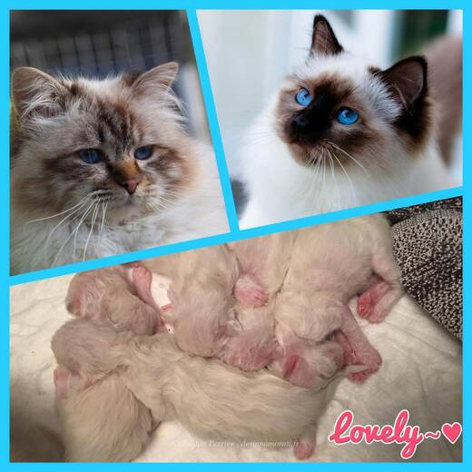

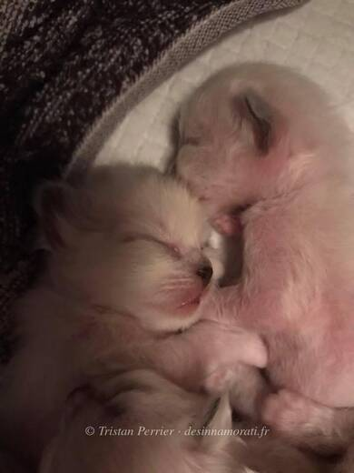

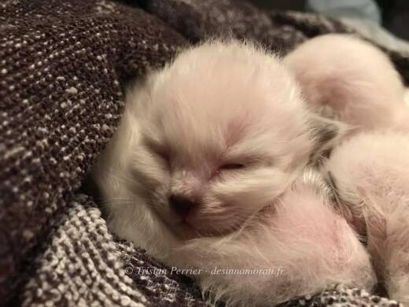

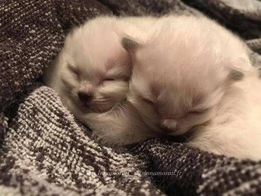

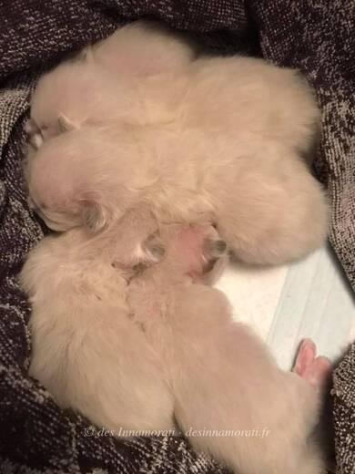

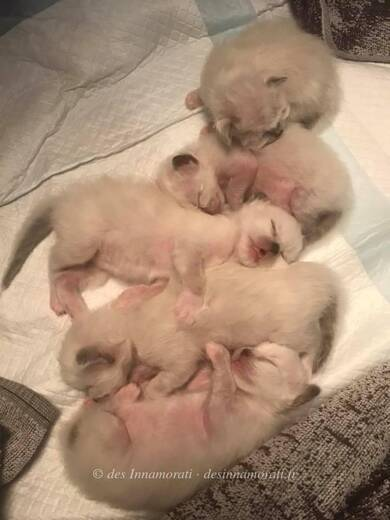

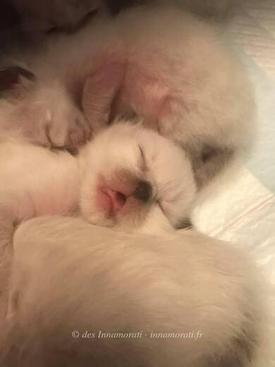


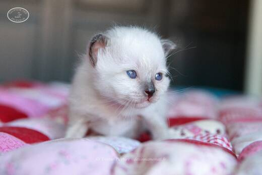

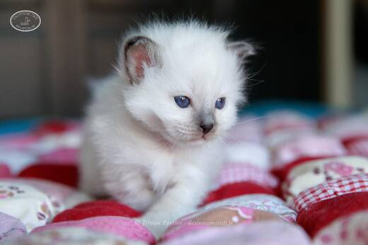

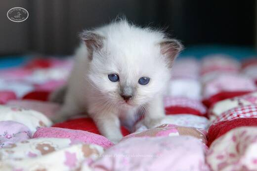

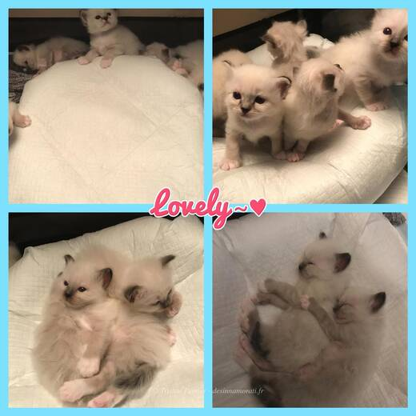

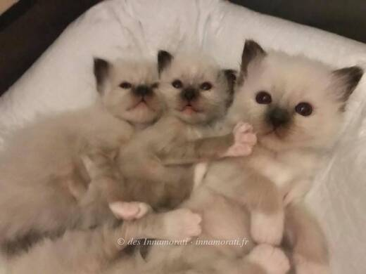

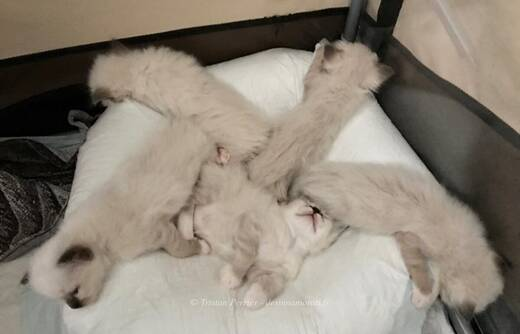
Photos réduites et marquées. Elles appartiennent à la Chatterie des Innamorati et ne peuvent pas être reprises dans une annonce.